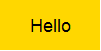

Building Pictures with Racket

By Rowan Weir, Daniel Barnas, Allan Schougaard
Introduction
The 2htdp/images and picturing-programs libraries provide built-in functions and primitives that allow you to produce simple graphics and even build complex
illustrations.

The functions available in these libraries can be placed into a few broad categories for easier understanding and use.
Simple Shapes
Let's start with a basic circle, one of the simplest shapes to create. A circle only requires three parameters: size, mode, and color.
We will see these parameters and this format repeated in the construction of other shapes, but what differentiates a circle is that the size is defined by the radius.
The radius is given as a number, denoting how many pixels used, which is typical for how size is defined in Racket.
The mode and color parameters don't change much between shapes, with mode describing whether the circle should be solid or an outline, and color, which we will discuss more in depth a little later.
(circle size mode color) -> image
What circle will be created with the following?
(circle 80 "solid" "red")
Try for yourself by clicking this button:
try it
Was this your result?

As expected, the resulting image is that of a solid red circle of radius 25 pixels.
If we switch the mode to "outline," we get the following:
(circle 80 "outline" "red")
Try changing the radius and observe the effect on the circle's size.
Experiment with different colors as well.
The simplicity of circles is that their radius is the same in all directions.
What if instead we wanted to draw an elongated circle, or an ellipse?
The ellipse function is very similar to making a circle, except that now we need to specify a width and a height.
(ellipse width height mode color)
Let's try creating an ellipse:
(ellipse 200 100 "solid" "pink")
What do we get?

Can you tell which argument corresponds to the width?
Which argument corresponds to the height?
How do the width and height of this ellipse compare to the circles we created above?
Why do you think the circles appear larger?
Polygons
Polygons are shapes with straight sides and angles. Creating them in Dr. Racket involves a process that is imilar to how we made our previous rounded shapes. Let's look at some of them in more detail.
Squares
Like a circle, the square function requires a size, a given numerical value that specifies the length of a side.
This is followed by the mode and color, as before.
(square side-len mode color)
Here's an example:
(square 150 "solid" "blue")
And here's what is created:

What about a square with a different mode?
(square 150 "outline" "blue")

How does a square with a side length of 150 compare to a circle with a radius of 80?
Which would you expect to be larger? Why?
Rectangles
By now the general outline for the functions used to define shapes should be becoming familiar.
Can you guess what parameters might be needed to create a rectangle?
(rectangle width height mode color)
(rectangle 225 125 "solid" "green")

How could you use the rectangle function to design a square identical to the blue square we produced above?
Triangles
There are several varieties of triangles you can create with Dr. Racket.
We are going to cover two: equilateral triangles and right triangles.
Equilateral triangles have three sides of equal length, and whose three angles, by extension, are also equal.
Consequently, to draw an equilateral triangle, you simply specify the desired side length, followed by the usual mode and color parameters.
(triangle side-length mode color)
Examples:
(triangle 150 "solid" "yellow")

A right triangle contains a 90 degree angle.
To construct a right triangle, you need to provide the two side-lengths of the sides adjacent to the right angle.
(right-triangle side-length1 side-length2 mode color)
(right-triangle 200 100 "solid" "orange")

Stars
There are several functions that produce star designs.
The simplest star available is the traditional five-pointed star that is available by calling the star function.
(star side-length mode color)
Here is an example:
(star 100 "solid" "purple")

The radial-star function allows for even more creativity, at the cost of a more complicated function call.
(radial-star point-count inner-radius outer-radius mode color)
The point-count is an integer value to determine how many points you'd like your star to have.
The inner-radius determines the radius of the body of the star, while the outer radius determines the radius of the tips of the points of the star.
The mode and color arguments are the same as for all the shapes above.
(radial-star 15 50 25 "solid" "violet")

There is one more type of star we can construct, and that is the star-polygon.
The star-polygon is almost exactly the same as a regular polygon, except that it takes one more argument, the step-count.
Instead of each vertex connecting to the one next to it, it instead connects to the vertex that is step-count vertices away, creating a star-like design.
(star-polygon side-length side-count step-count mode color)
Here's an example:
(star-polygon 50 10 3 "outline" "indigo")

Other Polygons
If you want to construct shapes with more than three or four sides, you can use the regular-polygon function.
With this function, you can construct regular polygons with any number of sides, and of any side length.
This is how we construct pentagons, hexagons, octagons or any other many-sided shape.
(regular-polygon side-length side-count mode color)
(regular-polygon 20 8 "solid" "palegreen")

Text
Text can be created with the text function, which requires a string, a font size, and a color.
(text string font-size color)
(text "Rose" 50 "hotpink")
More detailed text formatting can be accomplished by using the text/font function.
It takes a variety of parameters that allow you to control individual aspects of how your text looks.
(text/font string font-size color face family style weight underline?)
(text/font "Violet" 50 "blueviolet" #f 'modern 'italic 'normal #f)
(text/font "Daisy" 50 "turquoise" #f 'system 'normal 'bold #t)
Color
On your screen, all colors are comprised of varying levels of red, green, and blue.
Using the function make-color, we can create a color by specifying these RGB channels.
(make-color red green blue)
You can also specify the alpha, which controls the opacity or transparency of the color you are creating.
(make-color red green blue alpha)
The name->color function accepts the name of a color (like those found on the color database) and returns the RGB alpha values.
Editing
Placement
These functions control where, and in what order, images appear.
Text
What if you wanted to add words to your images. Given the primitives
above, you could try to construct letters one piece at a time. Luckily,
you don't have to go through all that trouble. Dr. Racket has the
functionality that allows you to create stylized text which is treated
as an image.
The contract for the text function is as follows:
(text string font-size color)
Let's give it a try:
(text "Rose" 24 "hotpink")
What if you'd like to play around with different fonts? Dr. Racket has
you covered with the followed function.
(text/font string font-size color face family style weight underline?)
Here's an example of how this might be used:
(text/font "Violet" 18 "blueviolet" #f 'modern 'italic 'normal #f)
(text/font "Daisy" 22 "turquoise" #f 'system 'normal 'bold #t)
Color
Dr. Racket comes with many default colors that you can use in the form
of strings such as "blue", "red", or "turquoise." The Dr. Racket color
database, located at the following link, has many predefined colors
that you can choose from.
But what if you'd like to use a color that's not in the database?
Fortunately, Dr. Racket provides us with a method to create almost any
color we can imagine.
make-color (red green blue alpha)
Like most computer graphics systems, Dr. Racket represents colors as a
mix of red, green, and blue. The value of each color is a whole number
that ranges from 0 to 255. To get black, you would set red, green, and
blue each to 0. To get white, you would set each to 255. Every color in
between would be a mix of those three colors.
Let's see an example:
(circle 25 "solid" (make-color 255 215 0 255)) ; add one with RGB
Did the circle appear in the color you expected? Why or why not? What
effect do you think the fourth input (255) had on the color?
You may have noticed the fourth input parameter alpha. This parameter
alpha is used to determine the opacity of the color. A value of 255
gives you a fully opaque (non-transparent) color. The closer you get to
0, the more transparent your image becomes.
Go ahead an play around with the values of red, green, blue, and alpha
in the example above to get a feel for how the parameters affect the
outcome.
What if you'd like to tweak one of Dr. Racket's predetermined colors
because it's a shade away from the color you'd like. You could play
around with make-color until you come close. But it may save you a lot
of effort to know the values of the parameters that make up the
predetermined color. Dr. Racket provides a handy function that offers
just that.
What are the values of red, green, and blue that make up the color
"aqua?" Let's find out:
(name->color "aqua")
(make-color 0 255 255 255)
Did it surprise you that aqua is just as blue as it is green?